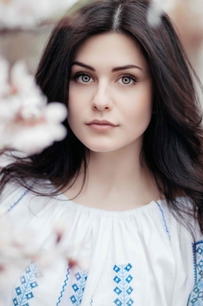

JAK NA ŠPIČKOVÉ PORTRÉTY
Fotit zvířátka, to už by nám šlo. Ale co lidi?
Možná to bude v nějakých ohledech podobné, ale určitě ne ve všech.
Však zkuste rozkázat batoleti "Lehni!". Myslíte si, že podá stejný výsledek jako Váš domácí mazlíček?
TECHNIKA KOMPOST
Možná si teď klepete na čelo, proč sem pletu zahrádkářství, ale nebojte, s tím to nemá nic společného.
Ve slově
KOMPOST
se totiž ukrývají 4 základní pilíře, bez kterých byste krásný portrét určitě nevyfotili -
kompozice, pózování, světlo a technika.
Každý bod vám tu jednoduše rozeberu a případně dodám užitečné tipy z praxe.
1.) PÓZOVÁNÍ - aneb co s rukama :)
Určitě se vám někdy při focení portrétů stalo, že vše bylo skvěle přichystané, ale pak nastalo dilema co s modelkou?
Co s jejíma rukama, aby to vypadalo dobře? Prvně vám musím říct, že existují modelky, které ať zapózují jakkoliv, pořád budou vypadat dobře.
Stejně tak existují i modelky, které ať se snaží sebevíc, výsledná póza nevypadá nejlépe.
Ale je tu několik obecných pravidel, která by měla fungovat vždy.
Ruce u těla. Tohle je jedna z póz, kterou vám rozhodně nedoporučuji už jen kvůli tomu, že je obyčejná a nezajímavá.
A hlavně když už fotíte modelku, určitě chcete, aby na fotce šly vidět její rysy.
Tímhle naopak všechny zakryjete.
Ruce v bok. Oproti předchozí póze je to pěkná změna.
Modelčiny rysy hned vyniknou a vypadá opticky štíhlejší.
Tohle obecně platí u jakékoliv pózy s rukama od těla.
Samozřejmě vše s mírou a hlavně aby to působilo přirozeně.
Asymetrie. Ruce ve vlasech, ruce za hlavou, jedna ruka sem, druhá ruka tam..
Experimentujte, vymýšlejte originální asymetrické pózy.
Je dokázáno, že takový snímek na první pohled upoutá více lidí.
2.) SVĚTLO
Když se rozhodnete, stejně jako já, pro focení portrétů venku, nejlepší čas na to je ráno při svítání a večer při západu slunce.
V obou případech se setkáte s velmi pěkným přírodním světlem a navíc nám hraje do karet, že sluníčko ještě nesvítí tolik, takže nebude oslepovat Vás, ani vaši modelku.
Není pravidlo, že kvalitní portréty vznikají jen ráno a večer, klidně můžete jít fotit v průběhu celého dne, jen bude ostřeji svítit sluníčko.
Někdy se to může hodit, ale většinou je to nežádoucí, protože se na obličeji modelky objeví tvrdší stíny.
Ovšem i tomuhle můžete zamezit použitím odrazné desky.
3.) KOMPOZICE
Tady bych zmínila jedno jediné pravidlo - KISS - Keep It Stupid Simple.
Opravdu mám z vlastních zkušeností ověřené, že portrét s naprosto jednoduchou kompozicí zaujme více než portrét, u kterého nevíte, na co se soustředit dřív.
Ale pozor, ať to s tou jednoduchostí nepřeženete!
Vaše fotka by pak ztratila originalitu a nikoho by nezaujala.
Z toho důvodu tu mám pro vás dva originální nápady na ozvláštnění vašich portrétů:

DEJ NĚCO PŘED OBJEKTIV
4.) TECHNIKA
Jak jistě víte, každý objektiv se na některé věci hodí více a na některé naopak méně.
Určitě nebudete fotit metr vzdálenou osobu teleobjektivem, stejně tak nebudete fotit 20 metrů vzdálenou srnku pevnou 50kou.
Jestliže chcete fotit portréty hlavně uvnitř, nejvíce se Vám hodí koupě
objektivu s ohniskovou vzdáleností 30mm a světelností 1,4.
A jestli jste zastáncem fotografování venku, bude pro Vás nejvhodnější
objektiv s ohniskovou vzdáleností 85mm, či více a světelností 2,8.
ZÁVĚREM
Všechny potřebné znalosti pro pořízení špičkového portrétu už máte,
jen bych na závěr chtěla dodat jednu velmi důležitou věc:
Nesoustřeďte se po celou dobu focení jen na nastavení a čísla, co se vám ukazují na obrazovce.
Zaměřte se i na modelku, komunikujte s ní a hlavně na ni v žádném případě netlačte.
Přece je to člověk, jako každý jiný, tak na ni také berte ohled, díky!